博客2026 年 10 月 20 日空间智能 · 强化学习阅读约 10 分钟
GPD: Distilling Routed 3D Privilege for Spatial Reasoning in Vision-Language Models
RGB 图像不包含几何信息，视觉语言模型因而常在深度和方向上判断失误。GPD 在训练中将场景的真实几何提供给教师，且仅提供每个问题所需的部分；部署的模型仍只以 RGB 为输入。

要点
询问视觉语言模型沙发与门相距多远，或微波炉位于椅子左侧还是右侧，模型常常判断错几何关系，随后在错误事实的基础上作出看似流畅的推理。仅使用结果奖励训练，只能告知模型最终答案错误。引入 3D 编码器或外部工具可以修正输入，但需要修改模型结构，并增加推理时间。
GPD（Geometry-Privileged Distillation，几何特权蒸馏）在成本较低的训练阶段使用几何信息。基于 3D 扫描构建的空间数据集本身已包含深度、物体语义和房间布局。GPD 将其转写为简短文本，只保留每个问题所需的线索，并连同参考答案提供给教师，教师与学生为同一模型。GRPO 依据结果奖励训练的同时，教师逐 token 修正学生答错的 rollout。部署时，模型的输入仅为 RGB 帧和问题。
以 Qwen3-VL-4B 为基座，GPD 在 VSI-Bench 上取得 57.1，在 MindCube、SPAR-Bench、MMSI-Bench 和 ViewSpatial 上平均取得 37.6，均高于 GRPO（56.4 和 35.7）以及仅以答案为特权信息的自蒸馏（55.7 和 31.5）。
1空间推理错误源于感知
空间推理要求模型判断距离、方向和布局，例如规划路线、抓取最近的物体、估计房间大小。现有工作主要分为两类。显式 3D 方法引入几何编码器，或在测试时调用重建与感知工具，由此获得几何证据，但需要修改模型结构，推理速度也随之下降。基于训练的方法在推理时只使用 RGB，在空间问答数据上微调或以强化学习训练模型，但其监督信号仅为最终答案，推理过程中深度顺序的错误或左右关系的颠倒既无法定位，更无从纠正。
On-policy 自蒸馏（OPSD）提供 token 级监督：同一模型在获得特权上下文后，对学生自身的轨迹重新评分。其特权信息通常为参考答案，但空间错误源于感知，参考答案无法纠正此类错误：深度或方向的误判只能依靠场景的真实几何纠正。同时，不同问题依赖的证据各不相同：计数依赖语义，距离依赖深度，布局依赖俯视图。
2GPD 方法
GPD 分为两个阶段。离线阶段为每条训练样本构建与问题相关的 3D 线索；训练阶段由同一个 VLM 在两种上下文下分别担任学生和教师。图 1 展示了这两个阶段。
路由 3D 线索离线完成，逐题路由
<scene_context> Depth near→far: chair(1.39m) → table(2.08m) → sofa(2.64m) → door(3.05m) Objects: chair [right-bottom], table [center], sofa [left-middle] … Cam-BEV: chair(left-front, 1.4m), table(front, 2.1m) … </scene_context> <reference_answer> A </reference_answer>
学生仅输入 RGB 帧和问题
“位于床边、面向椅子时，微波炉在椅子的左侧还是右侧？”
GRPO 依据答案为每个 rollout 评分，奖励 R < 0.5 的 rollout 交由教师处理。
教师相同权重 + 路由 3D 线索 + 答案
学生：A. 右侧参考答案：B. 左侧
更新后部署仅一套权重
测试时无需深度、分割或布局信息，几何知识已存储于权重之中。
按问题路由的文本化 3D 线索
GPD 为每条训练样本离线构建至多三种线索，仅需构建一次。VSI 和 SPAR 等源自 ScanNet 3D 扫描的数据集，线索直接取自标注；其他数据集则使用 Depth Anything 3 估计深度，使用 Grounded-SAM-2 检测物体。每种线索均按固定模板转写为数行文本：深度线索按由近及远的顺序列出物体及其距离，语义线索列出物体及其所在图像区域，鸟瞰图线索给出物体相对于相机的俯视位置。
并非每个问题都需要全部线索，全部注入反而会稀释教师信号。因此，GPD 由基座 VLM 离线为每个问题选择相关的线索子集。路由结果符合直觉：计数问题全部路由至语义，绝对距离主要路由至深度，房间面积主要路由至俯视图，相对方向路由至语义和俯视图。
文本是承载此类特权信息的合适形式。在训练前的零样本测试中，向 Qwen3-VL-4B 提供不含答案的 3D 输入，路由后的文本是唯一优于仅用 RGB 的 3D 输入形式，如图 2所示。
Qwen3-VL-4B，零样本，VSI-590K 中的 1,000 个问题，不提供参考答案
不同形式 3D 输入下的准确率（%）
教师纠错
训练时，学生的输入为 pS = (RGB, 问题)，每个问题采样 8 个答案，GRPO 将其奖励转化为优势。教师为同一网络，输入为 pT = (RGB, 问题, 路由线索, 答案)。对学生采样的每个 token tj，GPD 比较两种输入下的对数概率 Δ = log π(tj | pT) − log π(tj | pS)，并以 eΔ − Δ − 1 作为反向 KL 的低成本估计。
两项设计用于保持该信号的纯净。一是仅作用于答错的 rollout，即奖励低于 0.5 的 rollout；对于答对的 rollout，教师只会引入噪声。二是将平均损失截断于 1.5，再以权重 λ = 0.003 加入 GRPO 损失。由此，教师沿学生自身的轨迹塑造其推理，而非要求学生模仿教师生成的文本。
3实验结果
实验以 10K 条 VSI、4K 条 SPAR 和 1K 条 MindCube 问题训练 2B 和 4B 规模的 Qwen3-VL-Instruct，训练 1 个 epoch，并与 GRPO 及仅以参考答案为特权信息的 OPSD 比较；各方法使用相同的数据、骨干模型和训练设置。
相同数据与骨干模型下的对照实验
VSI-Bench，平均准确率
在 VSI-Bench 上，GPD-4B 取得 57.1，比基座模型高 1.7 分，比 GRPO 高 0.7 分，比 OPSD 高 1.4 分，提升集中于相对距离、相对方向等依赖几何的子任务。在另外四个基准上，其平均分为 37.6，比 GRPO 高 1.9 分，比 OPSD 高 6.1 分，其中 MindCube 上提升最大，GPD 为 38.0，GRPO 为 33.0。2B 模型在两项平均分上呈现相同的排序，GPD 分别为 51.7 和 33.6。仅以答案为特权信息的 OPSD 常低于 GRPO，说明仅凭答案无法指出推理在何处出错。
4关键因素
消融实验基于 Qwen3-VL-4B，指标为五个基准的平均分，GRPO 为 39.8。答案与几何信息互补：仅加入参考答案为 40.2，仅加入路由 3D 文本为 40.5，二者同时加入为 41.5。路由优于增加上下文：注入全部 3D 文本及答案时降至 39.8，与 GRPO 相同；将路由线索渲染为图像时为 40.4。权重与门控均有影响：λ = 0.003 时效果最佳；若教师作用于全部 rollout 而非仅作用于答错的 rollout，平均分下降 0.9。
Qwen3-VL-4B，五个基准平均分
特权信息的内容与形式
相同实验设置
蒸馏权重 λ 与作用范围
5模型是否吸收了几何信息
若 GPD 已内化这些线索，测试时再提供线索带来的收益应当更小。实验结果与此一致，如图 5所示：仅使用 RGB 时，GPD 为 56.3，GRPO 为 54.9；测试时加入路由 3D 文本后，GRPO 提升 2.1 分，GPD 仅提升 0.6 分。
Qwen3-VL-4B
仅使用 RGB 与测试时加入路由 3D 文本的准确率
训练曲线支持同一结论。训练初期两者的验证准确率相近，此后 GRPO 趋于平稳，GPD 则持续提升；GPD 的策略熵峰值更高、出现更早，表明在两者收敛之前，教师信号扩大了探索范围。论文的案例分析中有一道四视角问题，涉及朝一座石制喷泉行走的情形：GPD 先定位相机，将转向映射到场景坐标系，并跨视角找到喷泉；GRPO 则将喷泉置于罐子的错误一侧，最终答错。
引用
@article{li2026gpd,
title = {Distilling Routed 3D Privilege for Spatial Reasoning in Vision-Language Models},
author = {Li, Hongxing and Li, Yixin and Li, Dingming and Wang, Zixuan and Yan, Yuchen and Zhang, Wenqi and Lu, Weiming and Shen, Yongliang},
journal = {arXiv preprint arXiv:2610.12355},
year = {2026}
}参考文献
- Yang et al. (2025). Thinking in Space: How Multimodal Large Language Models See, Remember, and Recall Spaces (VSI-Bench).
- Li et al. (2025). ViewSpatial-Bench: Evaluating Multi-Perspective Spatial Localization in Vision-Language Models.
- Li et al. (2025). SpatialLadder: Progressive Training for Spatial Reasoning in Vision-Language Models.
- Zhao et al. (2026). Self-Distilled Reasoner: On-Policy Self-Distillation for Large Language Models.
- Shao et al. (2024). DeepSeekMath (GRPO).